注：五子剑五子棋系列讲座教程出自掌棋盟论坛，版权归原作者本人及掌棋盟论坛所有，未经许可，请勿私自转载。爱五子棋网站已获授权。
下棋这几年，飘飘零零的真正踏实在下棋的时间并不多，利用空闲的几天写下个人的一些经
验，希望可以对棋友有所帮助！
我认为下棋最重要的是态度和方法，你对五子棋的热爱程度以及学棋时所用的方法是提高
的关键！
阅读的顺序为：
五子棋初级→五子棋初级花月→五子棋初级蒲月→五子棋初级习题→
五子棋中级→五子棋中级云雨月→五子棋中级寒星→五子棋中级银月→五子棋中级习题→
五子棋ＶＣＦ习题集→五子棋高级
所有截图画面是ＬＩＢ、五子妙手３.０、ＱＱ游戏五子棋单机版能有如此多的人爱好
五子棋是最令人高兴的事，如此多的人为了同一种游戏来交流甚至痴迷！
感谢所有下五子棋的朋友，祝大家笑口常开、一生平安！
棋友：五子剑
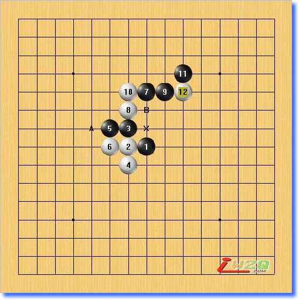
所谓33禁手，即两个活三！
看图中的X点！这个点形成两个三！
横线下A后顺利形成活四，再看立线，当在B点落一子后形成四四禁手，所以立线的活三是不成立的，因为在B点无法形成活四！
所以，X点不是33禁手！
这个是二层禁手！
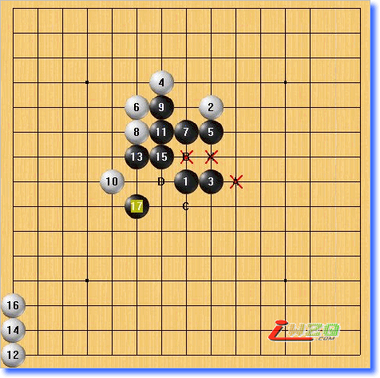
现在来看图中的X点，形成2个三，斜线的三在A点可形成活四。再看横线的，黑棋落在B点后，有形成一个四三三，立线在C点形成活四，而斜线在D点成四时形成一个四四禁手！那么现在反推回来，5、17这条线上的三不是活三，则B点是一个四三杀，不是禁手，于是X点横线上的三可以形成活四！所以X点就是一个三三禁手！
这是一个三层禁手！
还有五层、六层等更为复杂的，都是这样一层层倒着推回来！
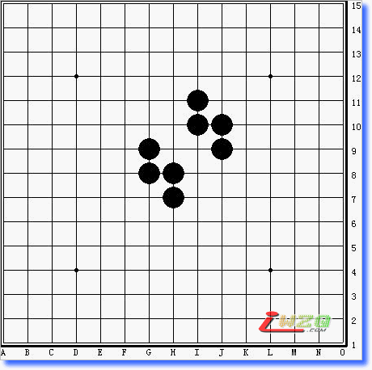
大家看看上面的图，黑棋的三三点和三三三点，哪些是禁手，哪些是假禁手呢？
先来看一下什么叫做反杀，如下图：
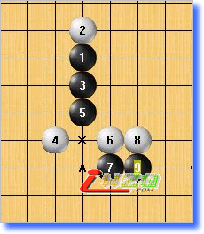
黑方在A点形成四三，但是白方在阻挡的过程中X点可提前形成活四，于是白方反杀获胜！
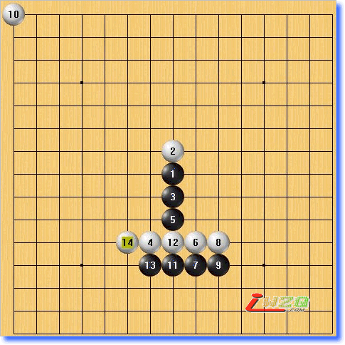
这是反杀的最简单的形式，有的反杀，一层套一层，黑方反完白方再反，就像多层禁手一样，很难说清先手最后花落谁家！
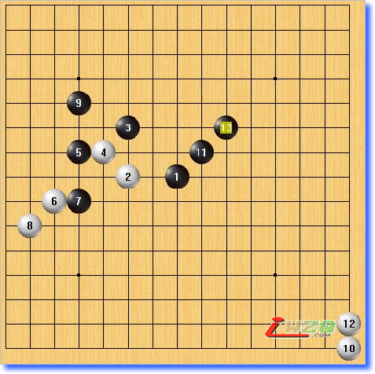
看这个稍微复杂点的多层反杀
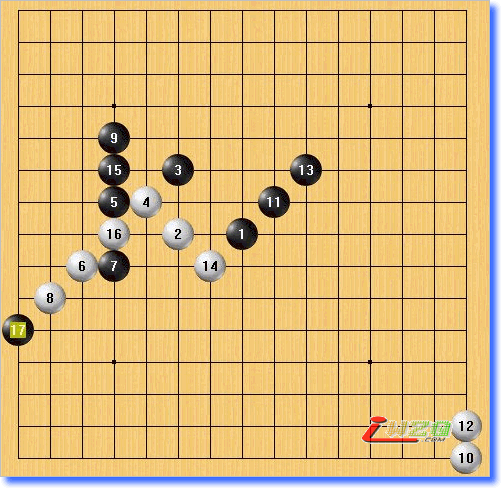
黑棋活三，白阻挡时自己在形成一个反活三，黑阻挡同时再形成一个反四，白防守时又形成一个反四，做终白方成为先手！
在中级阶段的学习中，下棋时应该开始注意细致的计算白方的棋了，对于比较复杂的对攻局面，是需要严密的计算过程与先手的激烈争夺的！
反杀是一种非常重要的技巧，无论进攻或是防守的时候都是一种非常重要的手段！
请看下图：
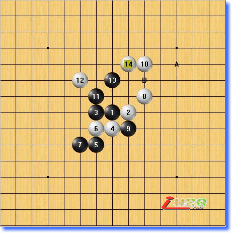
看白棋，现在在A点有四三杀，同时也可在B点活三简单取胜！
那么还应该如何防守呢？
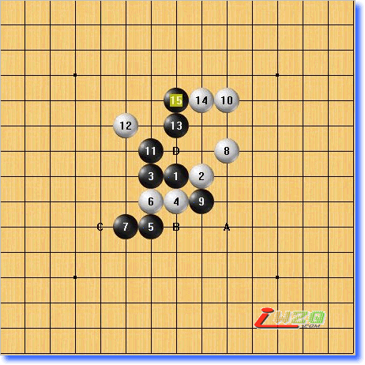
15手防在边上，同时形成A/B/C/D的四手VCF，抢在了白棋企图活三取胜的前面！
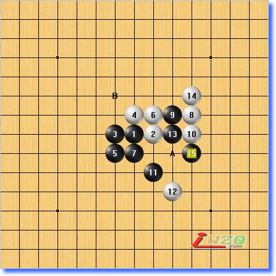
现在黑在A做四三杀，白索然可以在A点反活三，但是黑在B位反跳三后局面明显黑优！那么白有没有更好的防守办法呢？
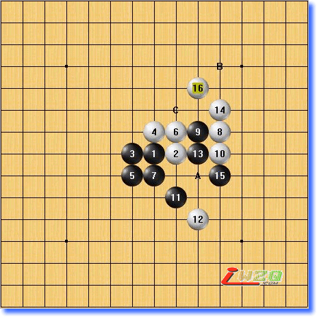
白16手!
16手后黑在A点虽然还能四三，但是三已经是假活三了，而白可以在B/C点后VCF取胜，如此白成功的抢到先手！
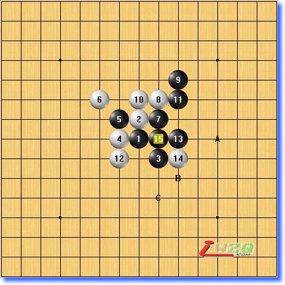
黑现在A/B/C点后VCF取胜，对此，白如何下比较好呢？
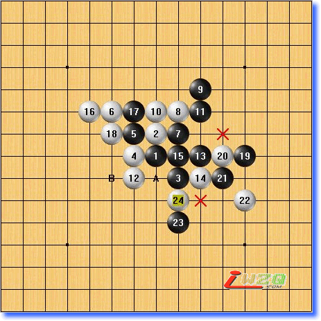
好棋！
白在左边形成一个活三，黑棋按照软来的路线VCF，在最后关头被白反四，黑A点防守后白继续B点四三胜，胜利！
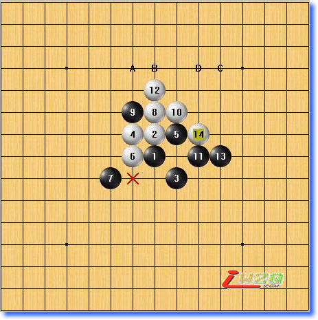
黑白对攻激烈，白现在在A/B/C/D有VCF，黑还有应对的办法吗？
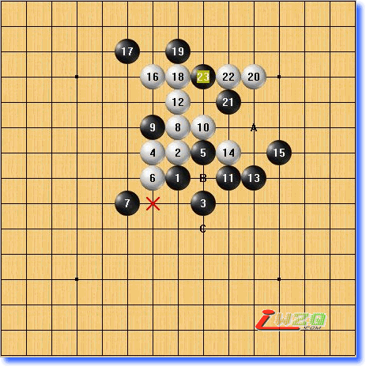
15手好棋！
黑在分析清楚白进攻的路线后，看到自己在防守时形成一个反三，于是再添一子形成反四！这需要对双方的落子算的非常精确！
白A点防守后黑在B/C点VCF抢先取胜！
反杀在对攻的局面中灵活运用常常能妙手生花，反败为胜！但这需要对双方的落子计算非常精确，但是如果前面的基础好，要做到也不是非常困难的事情！
请看下图：
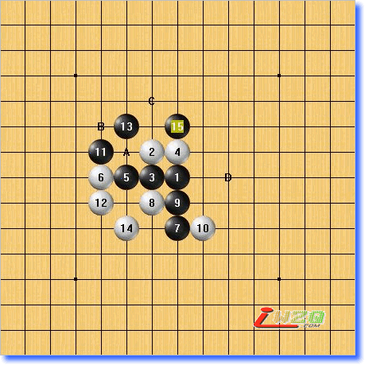
现在黑方有两路先手，通过A,B活三胜，也可通过C,D胜！白是否已经无解？
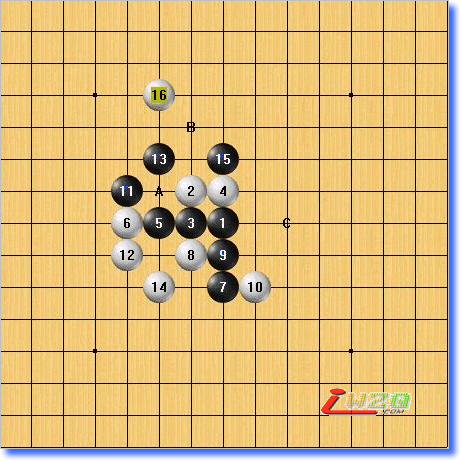
白16手！现在再来看，黑在A点的活三已经是假三，而B,C线上的活三也已经被白16手先防守了，所以白一子防守了黑两个先手，16手就是共防点！
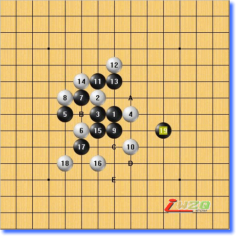
19手远飘的一手！同时形成A点的四三杀，以及在B,C,D,E点的4手VCF杀！猛一看，好像白已经回天无力了！
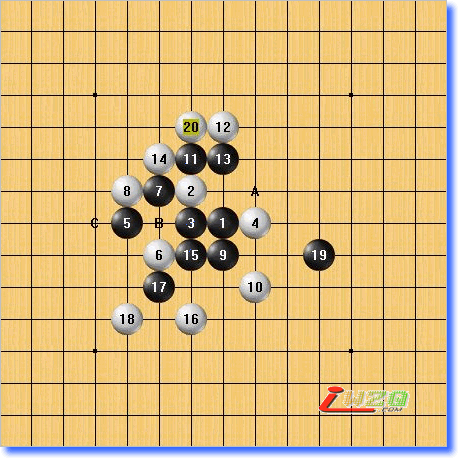
20手！
白在13、19的线路上选择一个弱防，同时反三，直接防守了A点的黑四三取胜路线，同时黑另一条路线在B点冲四时白也可在C点抢先活四，如此白方防守成功！
可以看出，很多情况下，共防通常都是一些单独棋型的弱防，但是放在具体的棋局中确实妙手或者是唯一着法！这就是前面为什么一直强调一定在学习的时候要穷尽防点的好处，你会很自然的也去想一些容易疏忽的走点！
如果你是第一次接触到反杀和共防的概念，你一定会觉得很刺激，第一次发现五子棋还有这样的乐趣！
我当初也是这样，觉得真是棋乐无穷，两手胜习题正好可以满足这样的需求！
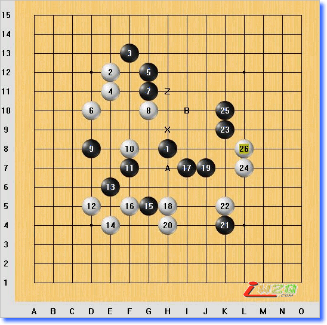
两手胜的思路：第一手是关键，即找到正确的一子双杀点，第二手四三胜。对于取胜的步数严格规定为两手，在题中可以找到很多一子双杀点，但是除了唯一的正解，其余白都可以很巧妙的一子双防，所以找到正解也不容易，而且找出一子双杀点本身也是锻炼。两手胜习题具有很高的趣味性！
假如现在黑在X点双杀，企图A,B点四三杀，则白防在Z点后黑即失败！所以X点不成立！ 图中正解为G8!黑方的禁手不仅使黑的进攻手段减少，同时也给了白多一种的取胜之道，追下取胜！即逼迫黑走禁手点！
下棋时黑白方都要有禁手意识，黑防止被抓，白则要利用禁手！
下面看两个简单的例子，禁手意识是一个长期提高的过程，其中技巧很多！
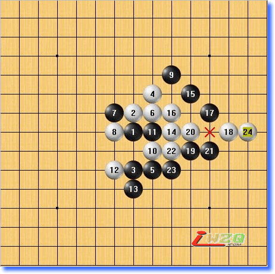
黑33禁手！
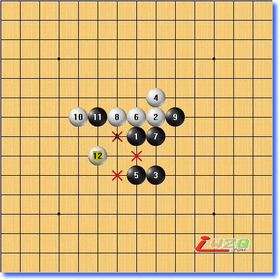
黑33禁手！
白方可以追下取胜，于是黑棋就需要去解禁，这种技巧也是下棋中必须具备的！
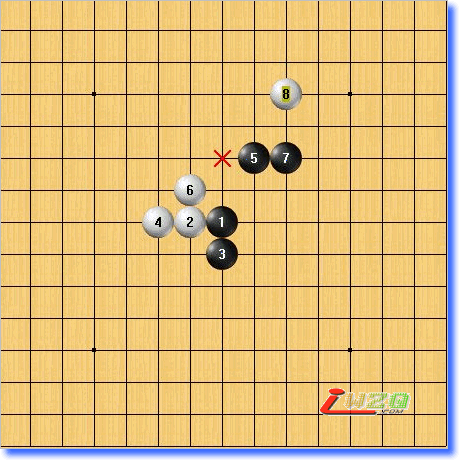
现在白可以利用冲4使黑走33禁手，那么现在黑有多少种办法来解禁呢？
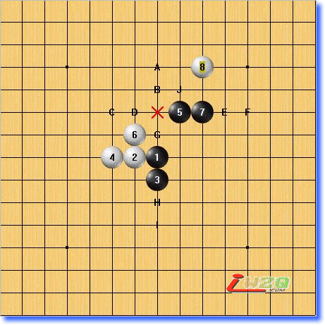
图中从A-J，黑都可以解禁，其中A点是利用长连来解禁！
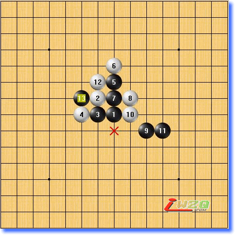
现在黑433禁手，黑应该如何下？
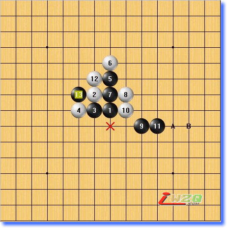
黑下A或B点解禁，白防守后黑在H7四三胜！
下面请做这个习题，可以提高对解禁的认识：
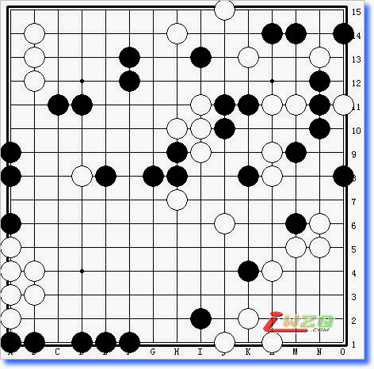
１、熟练掌握各种技巧
２、具备良好的先手意识
３、对大部分的棋型都有较深刻的认识
４、初步了解“势“的概念
５、初步具备控棋的概念
关于一些特殊的技巧在下棋时是很少碰到的，但是却需要良好的基础才可以在碰到的时候可以想出来，所以这部分的练习可以通过做习题来弥补。
有很多的两手胜习题以及ＶＣＦ习题等其他的习题，这个很容易找到，做的越多你掌握的就越好！
现在也可以开始学习优势局，主要还是学习优势局的大优点，对棋型有更深刻的认识。
因为已经具备最基本的线路攻杀技巧，这时的学习可以有些点不用地毯式学习，以提高速度！
方法还是同原来的一样，输的棋还是要总结，这个在任何人身上都适用，无论水平到什么样的层次！
中级水平现在很容易可以胜初级阶段的朋友，杀起来很有感觉！
然而在和厉害的人下时常常会有摸不着头脑的感觉，原因在于你半懂不懂，无法明白对方的下棋思路，最大的感慨就是为什么这里我想不到呢？
慢慢来，不要急，现在也可以和一些人一起下棋讨论研究，互相学习，但讨论的人一定要水平和你差不多的或者比你稍高一些的！
非常高兴我们同时成为五子棋的爱好者，虽然或许不曾相识，然而能在同一个游戏里共同感受五子棋的乐趣，这种缘分令人喜悦！谢谢！
妙!!!!!!!!!!!
我的防守好差劲呢

 看不懂的
看不懂的 努力吧。
努力吧。